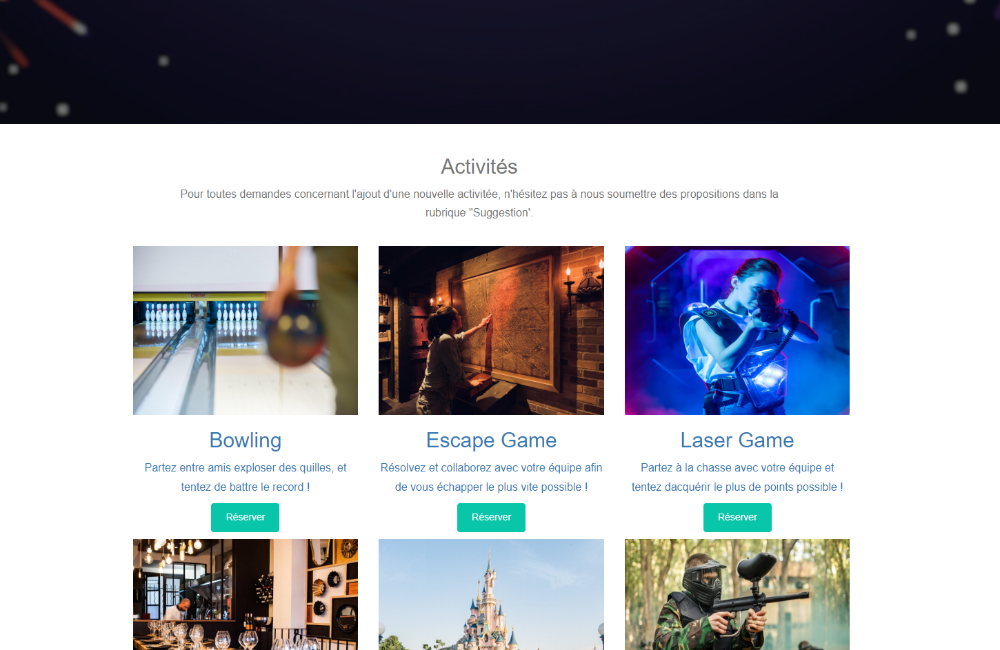

Développement - Php
CFun Insta - Gestion d'Activités Collaboratives
Concept de l'application
Bienvenue sur CFun Insta, votre solution pour une organisation d'activités collaborative et conviviale!
CFun Insta est une application que j'ai développée dans le cadre de mon BTS SIO option SLAM, en collaboration avec mon talentueux collègue, Sivan Cozzo.
L'objectif principal de cette application est de faciliter la planification et la participation à diverses activités au sein de notre CFA.
Langages Utilisés : PHP, HTML, CSS et JavaScript
Pour la réalisation du projet CFA Insta, nous avons opté pour une approche polyvalente en utilisant une combinaison de langages de programmation.
PHP, en tant que langage côté serveur, a été choisi pour la gestion des données et la logique métier.
Il nous a permis de créer un backend robuste, capable de traiter les requêtes de manière efficace et de communiquer avec la base de données.
HTML et CSS ont été utilisés pour concevoir l'interface utilisateur de l'application.
HTML a été employé pour structurer les éléments de la page, tandis que CSS a été utilisé pour styliser et présenter l'application de manière attrayante.
Ces deux langages frontaux ont contribué à offrir une expérience utilisateur fluide et esthétiquement agréable.
JavaScript a été intégré pour apporter des fonctionnalités interactives à l'interface utilisateur.
Nous avons utilisé des éléments de JavaScript pour améliorer l'expérience utilisateur en permettant des mises à jour en temps réel et des interactions dynamiques, améliorant ainsi la convivialité globale de l'application.

Fonctionnalités Principales
Choix Varié d'Activités :
Explorez une gamme d'activités disponibles et sélectionnez celles qui vous intéressent le plus.
Création de Créneaux :
Une fois connecté, vous avez la possibilité de créer des créneaux en indiquant la date et l'heure pour organiser votre activité préférée.
Visualisation des Activités :
Consultez les activités organisées par d'autres utilisateurs. Par exemple, vous pouvez découvrir qu'un groupe prévoit d'aller au restaurant à une date spécifique et rejoindre la participation.
Modèle-Vue-Contrôleur (MVC) et CRUD
Dans le développement de CFun Insta, nous avons adopté l'architecture Modèle-Vue-Contrôleur (MVC). Cette approche structure le code de manière modulaire, séparant les responsabilités liées aux données, à l'interface utilisateur et à la logique métier.
Modèle (Model) :
Le modèle gère la logique métier et les données. Dans notre cas, le modèle PHP a été responsable de l'interaction avec la base de données, de la validation des données et de la manipulation des objets métier.
Vue (View) :
La vue représente l'interface utilisateur. HTML et CSS ont été utilisés pour créer une vue attrayante et conviviale, tandis que JavaScript a été employé pour ajouter des fonctionnalités interactives, offrant ainsi une expérience utilisateur améliorée.
Contrôleur (Controller) :
Le contrôleur orchestre les interactions entre le modèle et la vue. En PHP, le contrôleur a pris en charge le routage des requêtes, la gestion des formulaires et l'orchestration des opérations CRUD (Create, Read, Update, Delete).
Le modèle CRUD, quant à lui, représente les opérations de base sur les données : la création (Create), la lecture (Read), la mise à jour (Update), et la suppression (Delete). Grâce à l'utilisation de l'architecture MVC et des opérations CRUD, nous avons créé une application bien organisée, maintenable et extensible.
Collaboration Simplifiée
CFun Insta favorise la collaboration en permettant aux utilisateurs de se connecter, de créer des activités et de participer à celles organisées par leurs pairs. Vous pouvez facilement planifier des sorties, des rencontres ou d'autres événements, rendant ainsi la vie sociale au CFA plus dynamique et interactive.
Technologie Utilisée
Cette application a été développée à l'aide des compétences acquises dans le cadre de mon BTS SIO option SLAM.
Nous avons utilisé des technologies modernes pour garantir une expérience utilisateur optimale.
En Collaboration avec Sivan Cozzo
Sivan Cozzo, un talentueux camarade de classe, a contribué de manière significative au développement de CFun Insta.
Notre collaboration a renforcé notre compréhension des concepts et des pratiques de développement logiciel, et ensemble, nous avons créé une application qui répond aux besoins de notre communauté.
Application de Communication et Gestion de Projet
Lors de notre collaboration sur divers projets, nous avons exploité habilement des outils modernes de communication et de gestion de projet pour favoriser une collaboration fluide et efficace. Discord, avec ses fonctionnalités de discussion en temps réel, nous a permis de maintenir une communication constante et instantanée. Cette plateforme a été notre hub central pour discuter des idées, partager des mises à jour et prendre des décisions collaboratives.
Conclusion
CFun Insta est bien plus qu'une simple application; c'est le fruit de notre passion pour le développement logiciel et notre désir de simplifier la coordination des activités au sein du CFA.
Explorez, planifiez et participez avec facilité grâce à CFun Insta !